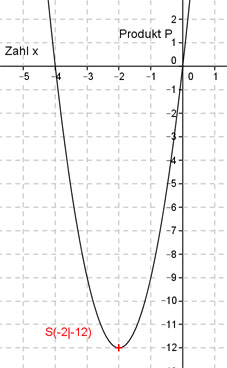

Aufgabe 109 Für welche Zahl ist das Produkt aus ihrem 3fachen und der um 4 vergößerten am kleinsten? Die Zahl sei x Das 3fache ist 3x um 4 vergrößert ist x + 4 P(x) = 3x(x + 4) P(x) = 3x² + 12x Dies ist die Funktionsgleichung einer nach oben geöffneten, gestreckten Parabel, deren tiefster Punkt der Scheitelpunkt ist. P(x) = 3x² + 12x |:3 P(x) ---- = x² + 4x 3 Quadratische Ergänzung: P(x) ---- = x² + 4x + 4 - 4 3 mit x² + 4x + 4 = (x + 2)2 P(x) ---- = (x + 2)2 - 4 | *3 3 P(x) = 3(x + 2)² - 12 Scheitelpunkt abgelesen: S(-2|-12) Die Scheitelpunktkoordinaten bedeuten: Die Zahl ist x = -2 und das kleinste Produkt P(-2) = 3 * (-2)(-2 + 4) = 3 * (-4) = - 12 